Crustáceos anaerobios que habitan los mantos acuíferos de Vidra, con mayor concentración en Karteos e Yxi.

El neteapirio se traslada con movimientos ondulados que tienen mayor fuerza en la cola, mientras que sus patas son usadas para dirigirse y así aferrarse a superficies rocosas, una vez instalado, se ayuda de sus largas antenas para atrapar restos de carroña o plantas que se lleva directo a las mandíbulas.
El núcleo de su sistema nervioso y reproductor se encuentran protegidos por el bulbo de su espalda, un apéndice con forma de flor constituida por placas más rígidas que las del resto de su cuerpo.

Aunque viven en las profundidades, la alarma de Drasque los atrae a la superficie con el fin de adherirse a su tejido protoplasmático; el neteapirio desgarra cuidadosamente la piel del organismo gigante, una herida minúscula por la que puede introducir su cuerpo y cerrarla desde dentro. La constitución casi líquida del Drasque le permite nadar adecuadamente y comerse las células muertas e impurezas no deseadas que puedan poner en riesgo la salud de su huésped.
Ponen alrededor de 500 huevecillos de los cuales sólo una quinta parte alcanza la adultez. Tanto huevecillos como neteapirios en etapa larval son consumidos por otros habitantes de las profundidades e incluso por otros neteapirios.